Social Media & Digital
Social media, event graphics, and infographics for the IceCube Neutrino Observatory
IceCube Neutrino Observatory (WIPAC)
As the sole graphic designer for UW-Madison's IceCube Neutrino Observatory, I created all visual communications across social media, print, and digital channels. This included Instagram and social media posts, event posters, infographics, holiday campaigns, and graphics supporting major scientific announcements — including a Nobel Prize nomination for lead researcher Francis Halzen.
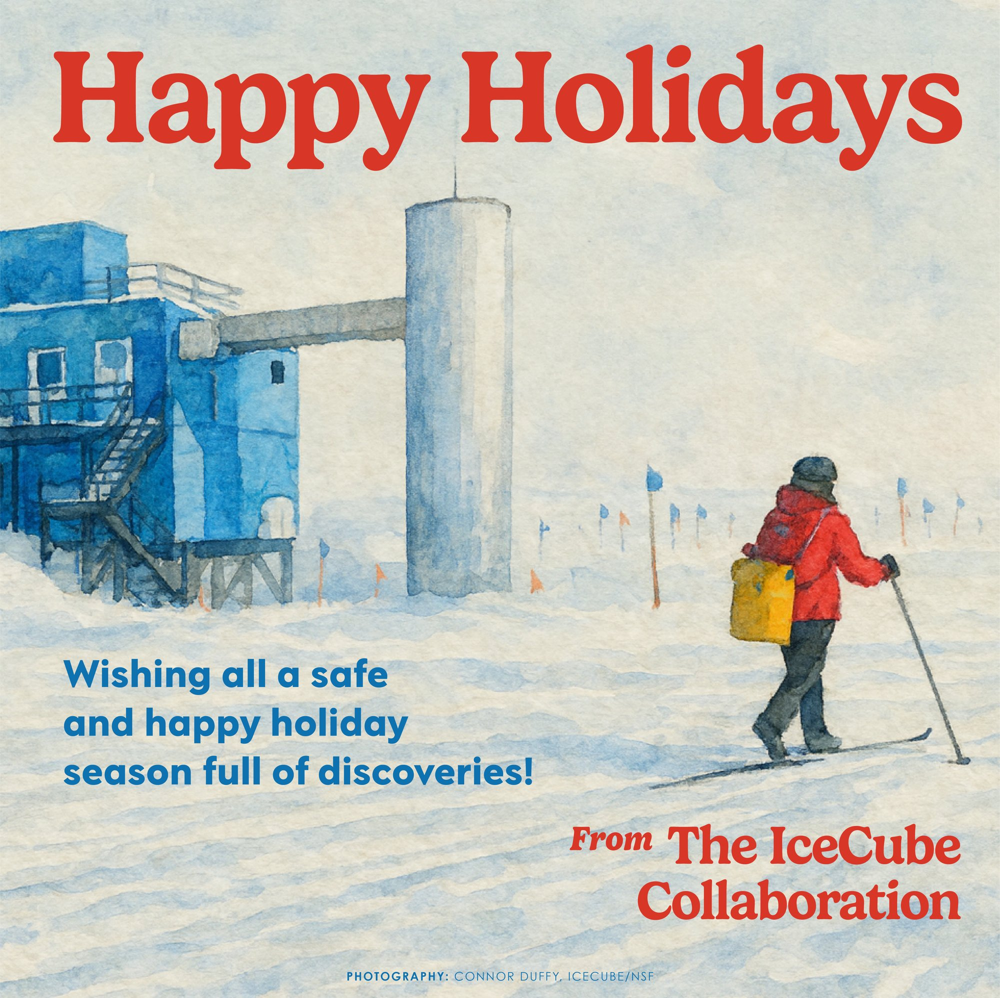
Social Media
Working for a scientific research center, I have to create a lot of information graphics. Taking confusing text and information, and trying to make it look interesting, yet not distracting. Finding a balance between creativity and legibility.
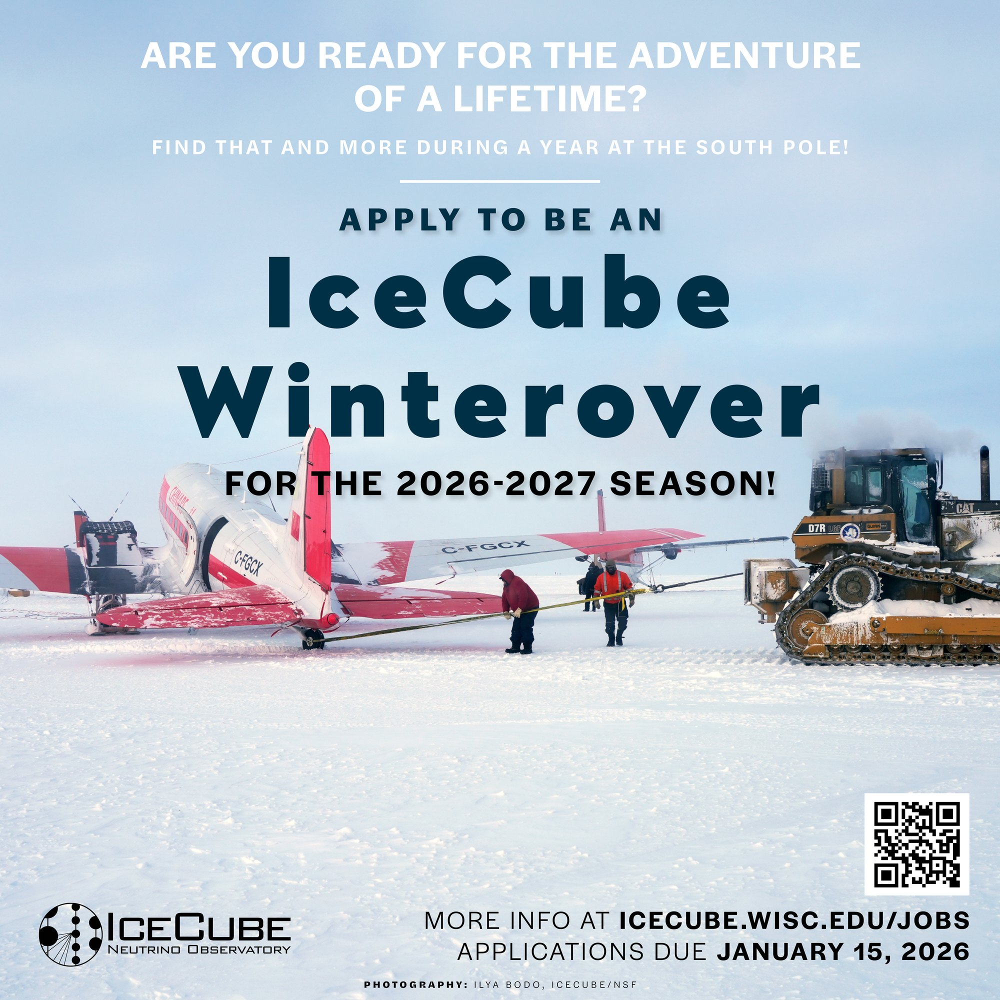
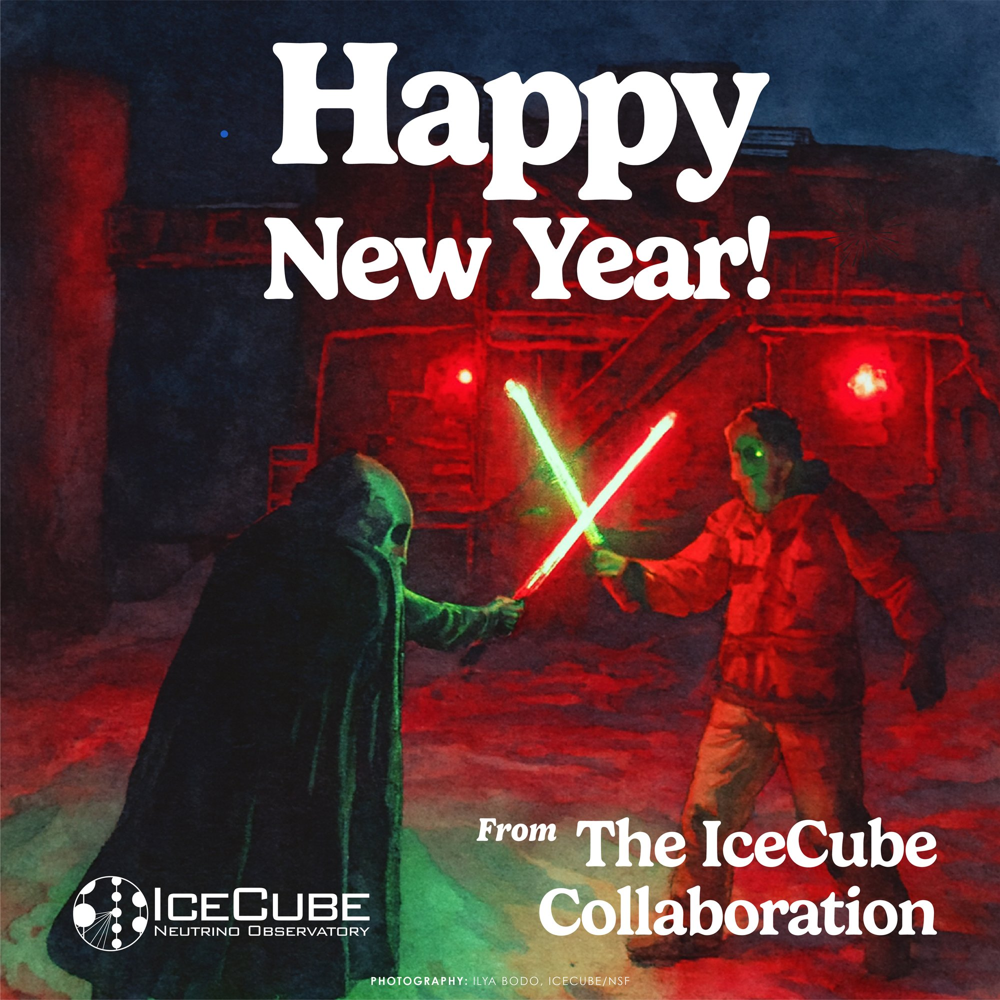
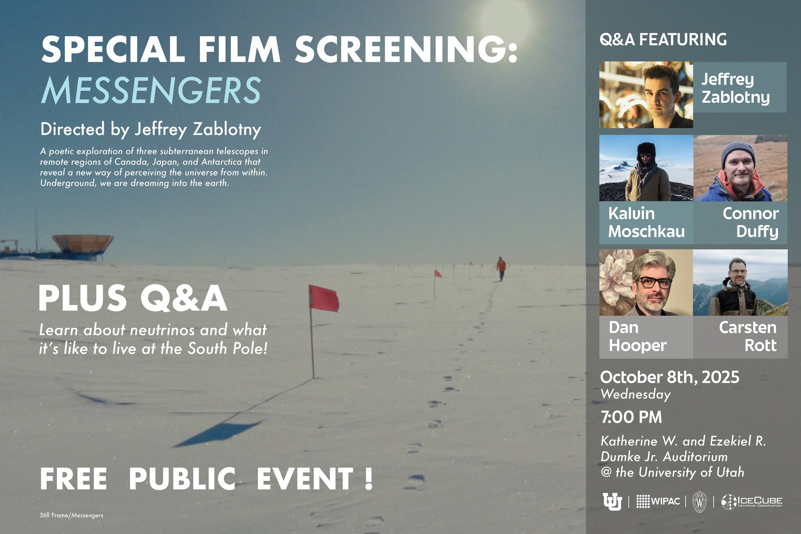
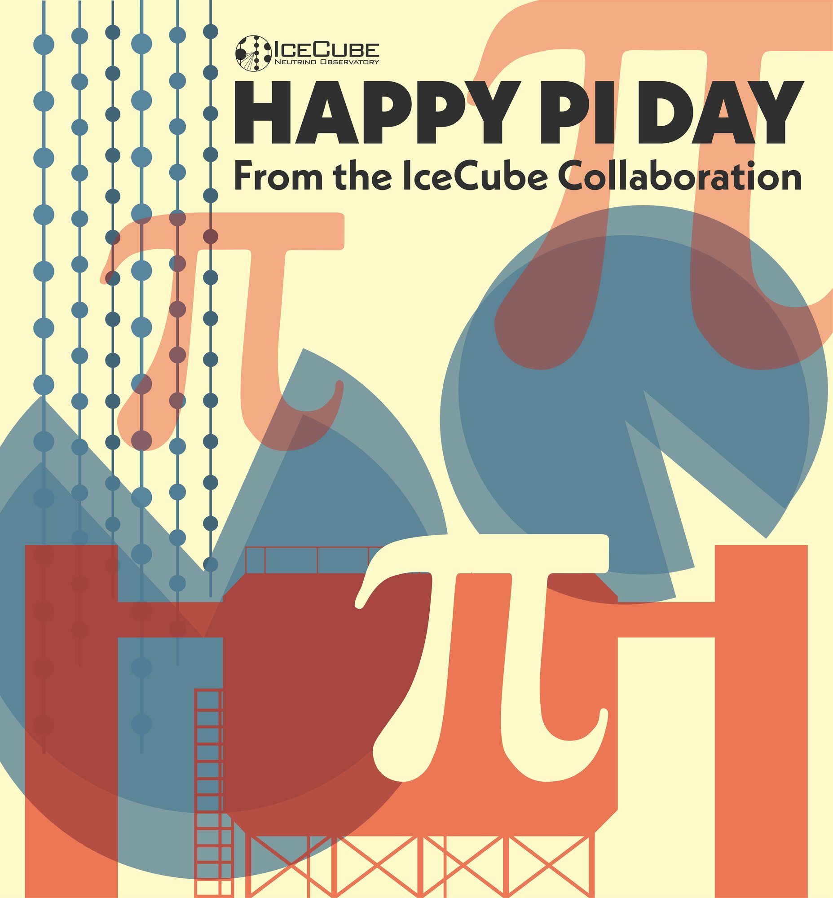
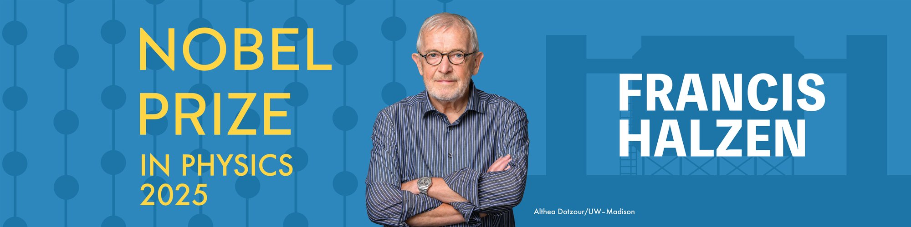
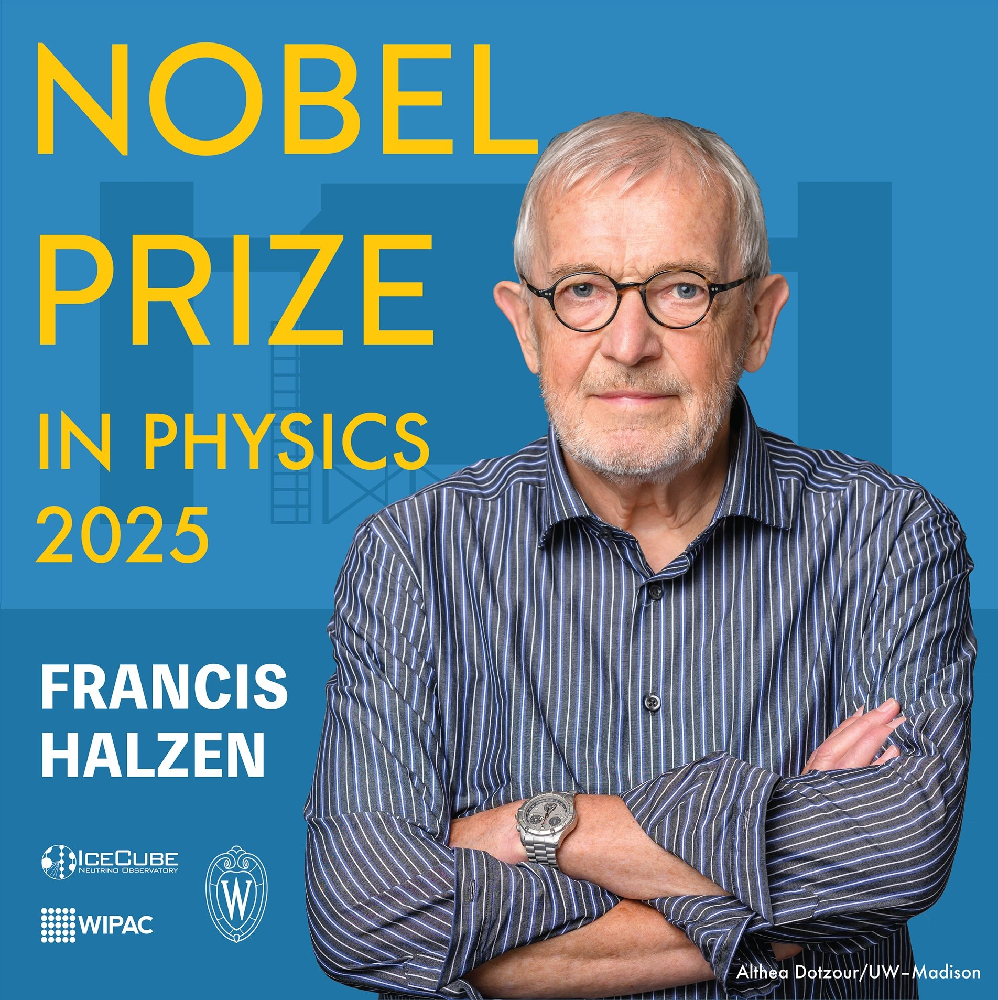
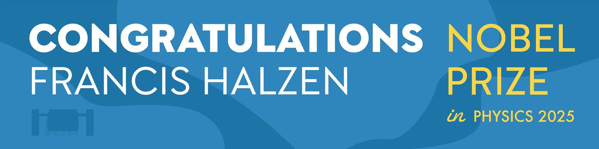
Infographics & Information Design
A big part of working at IceCube is translating complex scientific concepts into clear, accessible visuals. These infographics break down detector technology, particle physics, and observatory infrastructure for both internal teams and public audiences.
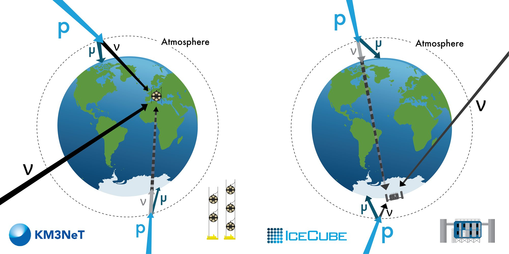
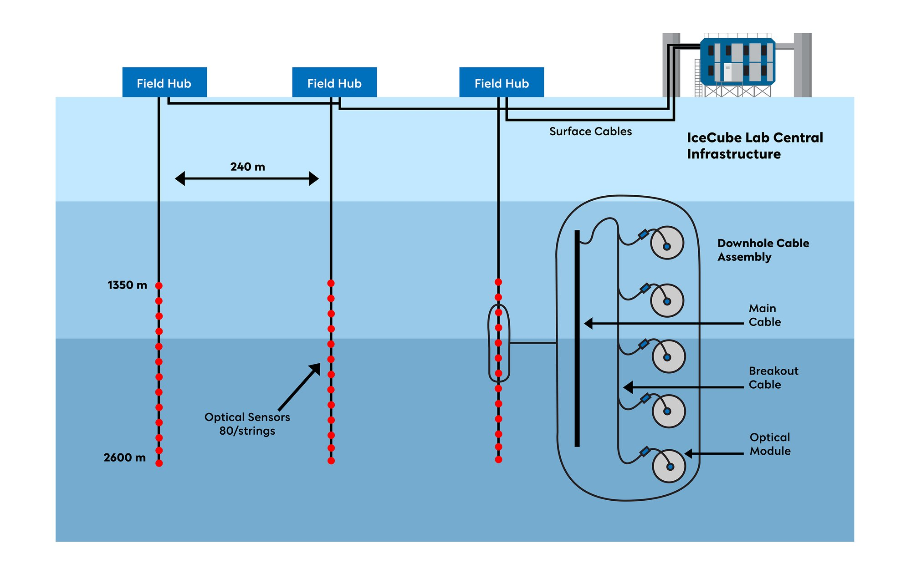
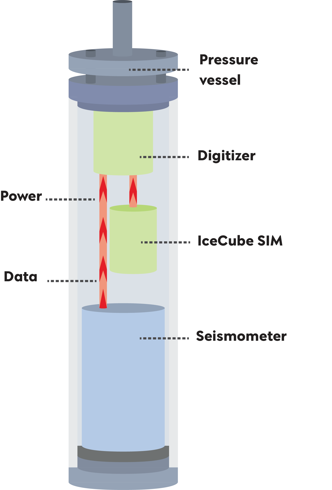